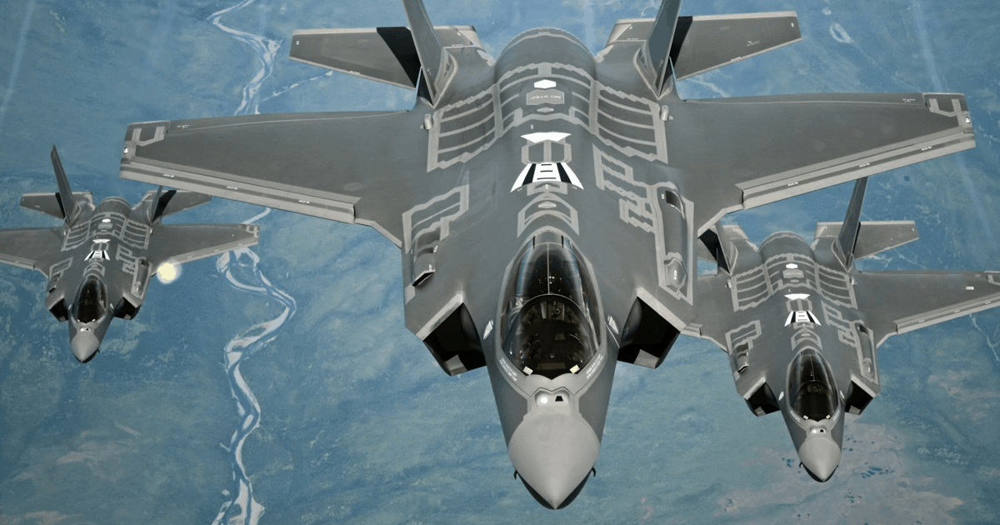

Легенди військової авіації
F-35 Lightning II
F-35 Lightning II (укр. «Блискавка ІІ») — родина малопомітних багатоцільових винищувачів п'ятого покоління, розроблена американською фірмою Lockheed Martin Aeronautics Company (Tactical Aircraft Systems) у трьох варіантах: для потреб ВПС США (наземний винищувач — CTOL), для Корпусу морської піхоти США і ВМС Великої Британії (винищувач з укороченим злетом та вертикальним приземленням — STOVL), і для потреб ВМС США (палубний винищувач — CV).
У консорціум на чолі з «Lockheed Martin» входять також «Northrop Grumman Corporation», «Pratt & Whitney», «Rolls-Royce», Allison та «British Aerospace». У розробці окремих вузлів беруть участь «Skunk Works» у Палмдейл і Aeronautical Systems.
Програма JSF
Конструкцію F-35 обрали у 2001 році внаслідок конкурсу за програмою JSF (англ. Joint Strike Fighter, єдиний ударний винищувач) між компаніями «Boeing» (модель X-32) та «Lockheed Martin» (модель X-35). Програма передбачала створення єдиної моделі винищувача для ВПС, ВМФ і морської піхоти з можливістю вертикального та вкороченого злету та приземлення для заміни F-16, A-10, F/A-18, AV-8B. Також замінять британський «Sea Harrier». Третю модель, від компанії McDonnell Douglas, відкинули через складність конструкції.
Фінальні випробування прототипів X-32 і Х-35 показали явну перевагу останнього: він показав зліт на майданчику довжиною 150 м, розвинув надзвукову швидкість, приземлився вертикально. Однією з головних переваг назвали метод створення вертикальної тяги: окремий вентилятор на X-35, а не просто зміна напрямку тяги основних двигунів на X-32 (що змушувало встановлювати поворотні сопла вертикального злету в центрі мас, недалеко від повітрозабірників, що, у підсумку, призводило до повторного потрапляння вихлопних газів у двигун і його перегрівання).
Конструкція
На F-35 використані багато технологічних рішень, відпрацьованих на F-22. Позначення серійних варіантів: F-35A (із стандартним злетом та приземленням), F-35B (з коротким злетом та вертикальною посадкою) і F-35C (зліт з палуби авіаносця за допомогою катапульти, а посадка на палубу — з використанням аерофінішера).
Бортова РЛС: На літаку встановлена багатофункціональна РЛС з АФАР AN/APG-81[en], що ефективно діє як по повітряних, так і по наземних цілях.
Авіоніка:
1. Радіолокаційна станція з активною фазованою антенною ґраткою AN/APG-81 виробництва Northrop Grumman Electronic Systems.
2. AN/AAQ-37— електронно-оптична система (ЕОС) з розподіленою апертурою (DAS), що складається з 6 ІЧ датчиків, розташованих на фюзеляжі з діапазоном огляду 360°. Система дозволяє: 1. Виявляти групові пуски балістичних ракет на дальності до 1300 км, супроводжувати дані цілі і видавати цілевказання по кожній з них в автоматичному режимі. 2. Виявляти інші наземні та повітряні цілі 3. Здійснювати навігацію при польоті удень/вночі 4. Попереджати про ракетну атаку літака 5. Виявляти точки пуску ракети, позиції діючої зенітної артилерії 6. Виконувати пуск ракети повітря-повітря по цілі, що летить за літаком
3. AAQ-40 — всеспрямована інфрачервона CCD-TV камера високої роздільної здатності, що призначена для спостереження й цілевказання. Вона забезпечує захоплення та супроводження будь-яких наземних, надводних та повітряних цілей. Повністю пасивна, вона здатна виявляти та супроводжувати цілі в автоматичному режимі і на великій відстані, а також повідомляти про лазерне опромінення літака.
4. AN/ASQ-239 (Barracuda) — станція індивідуальних перешкод (РЕП)
5. HMDS — Helmet-Mounted Display System. Нашоломна система цілевказання та індикації, можливе управління поглядом та поворотом голови.
6. PCD — panoramic cockpit display, широкоформатний сенсорний дисплей відображення інформації (50 на 20 сантиметрів), також можливе управління голосом.

Виробники елементів літаків сімейства F-35
Модифікації
Літак створюється в трьох основних варіантах:
1. F-35A — літак для ВПС США, технологічно найпростіша і, відповідно, легша і дешева версія F-35. Саме вона складе основу закупівель країнами-партнерами та очікуваного масового експорту. Оснащений вбудованою чотириствольною 25-мм гарматою GAU-22/A, з 2024 року — носій термоядерної гравітаційної бомби B61-12.
2. F-35B — літак для Корпусу морської піхоти США і Королівського флоту Великої Британії. Головна риса — можливість скороченого злету та вертикального приземлення. Оснащується підвісним контейнером з 25-мм гарматою GAU-22/A. В майбутньому повинен скласти основу авіагруп нових УДК типу «Америка», власне, представляють собою легкі авіаносці з обмеженими можливостями для висадки десанту та значно розширеними, порівняно з кораблями минулого покоління «Уосп», можливостями авіагрупи. Так само планується базування на авіаносцях Великої Британії класу «Королева Єлизавета» та італійському авіаносці «Кавур».
3. F-35C — літак для ВМС США. Варіант має збільшену площу крила і хвостового оперення, що дозволяє маневрувати на невеликих швидкостях при польотах з авіаносців. Крило більшого розміру дозволяє також збільшити корисне навантаження. Додано посадковий гак. Порівняно з F/A-18C, F-35C матиме вдвічі більший бойовий радіус дії. У жовтні 2010 року прем'єр-міністр Великої Британії Девід Камерон оголосив про рішення віддати перевагу для озброєння споруджуваних авіаносців Королівського флоту Великої Британії замість F-35B версію з катапультним злетом. Як причини були названі «більші бойові можливості та велика дальність польоту при меншій ціні», але 9 травня 2012 було оголошено про рішення повернутися до планів закупівлі F-35B. Основною причиною цього рішення було небажання нести великі витрати (близько $3 млрд) на модернізацію авіаносців.

Три основні конфігурації F-35
Озброєння
F-35 має широку номенклатуру озброєнь. Серед них ракети класу повітря-повітря AIM-9 Sidewinder, AIM-132 ASRAAM і AIM-120 AMRAAM, а також крилаті ракети Storm Shadow і AGM-158 JASSM. Входять до номенклатури і кореговані бомби JDAM вагою до 910 кг, кластерні бомби WCMD, керовані авіаційні бомби AGM-154 Joint Standoff Weapon і протитанкові ракети Brimstone. На додаток до базових вимог, Норвегія та Австралія фінансують роботи з пристосування до F-35 перспективної протикорабельної ракети Naval Strike Missile (NSM), яка отримає назву Joint Strike Missile (JSM). За твердженням виробника, F-35 зможе запускати ракети та кореговані бомби з внутрішніх відсіків на максимальних надзвукових швидкостях. Велика Британія планує розширить можливості своїх винищувачів п’ятого покоління F-35B завдяки інтеграції авіаційних ракет "повітря-повітря” Meteor і високоточними боєприпасами SPEAR 3 «до кінця десятиліття». Впровадження двох нових ракет на F-35 ведеться вже тривалий час. У 2019 році Lockheed Martin отримала початкове фінансування для початку інтеграції.
Грамата
Спеціально для винищувача-бомбардувальника F-35 фірмою General Dynamics створена авіаційна чотириствольна гармата GAU-22/A калібру 25 мм. Дана модифікація отримана шляхом глибокої модернізації гармати GAU-12, що використовується на літаках AV-8 Harrier II. Найбільша відмінність — зменшення кількості стволів з п'яти до чотирьох, що дозволило значно зменшити масу — приблизно на 20 кг, зменшити об'єм, займаний зброєю на 20 % і підвищити точність. На модифікації F-35A гармата буде встановлена всередині літака, над і трохи позаду лівого повітрозабірника, боєкомплект складе 180 снарядів. Для модифікацій F-35B і F-35C розроблено підвісний контейнер з боєкомплектом 220 снарядів, що кріпиться під фюзеляжем, в задній частині. Незважаючи на те, що при створенні контейнера використовувалися технології зниженої помітності, очевидно, що використовуватися він буде, як зброя на зовнішній підвісці, переважно, коли ППО противника буде знищена та лише в тих місіях, де гармата буде корисна (наприклад, безпосередня підтримка військ).